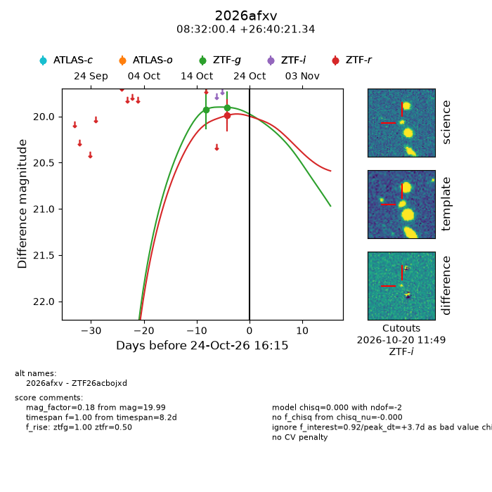
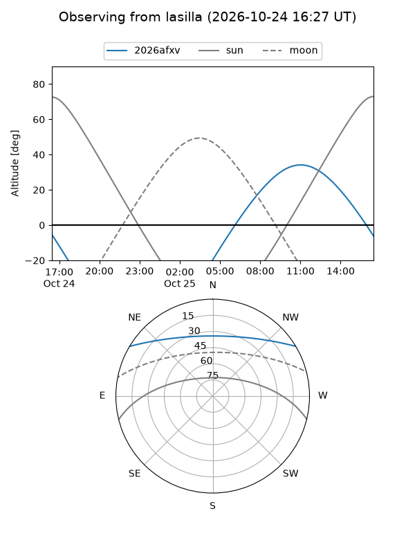
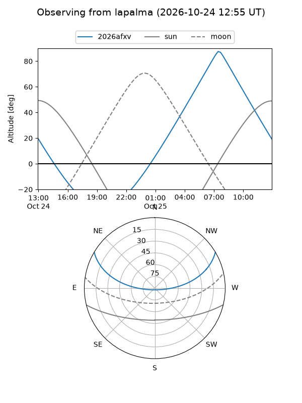
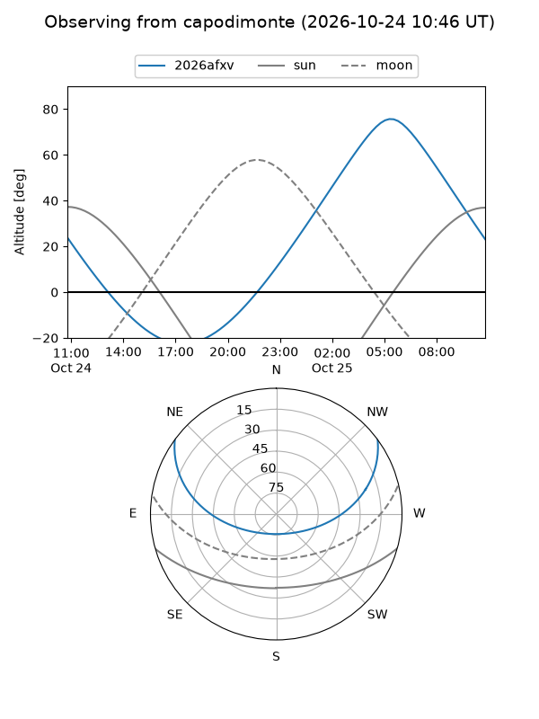
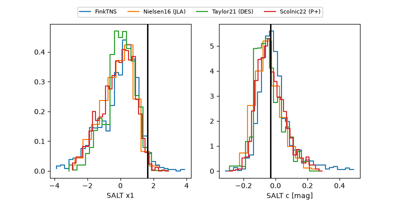

2026afxv
Target 2026afxv at 2026-10-25 04:11
Aliases and brokers:
FINK-ZTF: ztf.fink-portal.org/ZTF26acbojxd
Lasair-ZTF: lasair-ztf.lsst.ac.uk/objects/ZTF26acbojxd
ALeRCE-ZTF: alerce.online/object/ZTF26acbojxd
YSE-PZ: ziggy.ucolick.org/yse/transient_detail/2026afxv
TNS name: wis-tns.org/object/2026afxv
Direct TNS query: direct search
alt names
ZTF26acbojxd (ztf,fink_ztf)
2026afxv (tns,yse)
Coordinates:
equatorial (ra, dec) = 128.0017,+26.67259
equatorial (HMS+DMS) = 08:32:00.40,+26:40:21.34
galactic (l, b) = (197.2967,+32.85911)
Flags:
peak dt: +4.2
Photometry:
last ztfg=19.90, ztfr=19.99
2 ztfg, 1 ztfr detections
Lightcurve

Visibility



Additional plots
